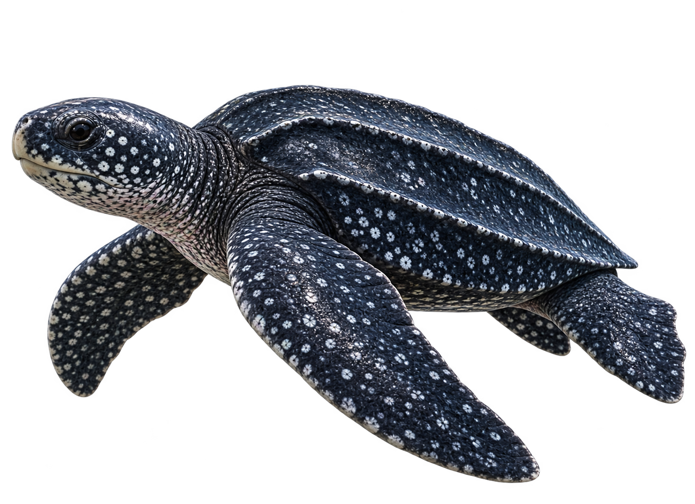
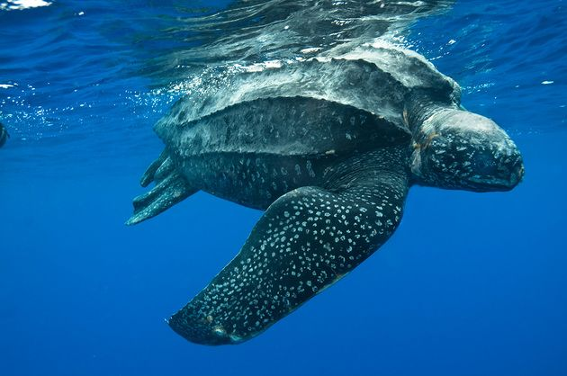
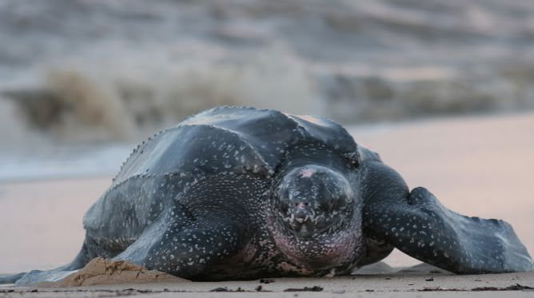
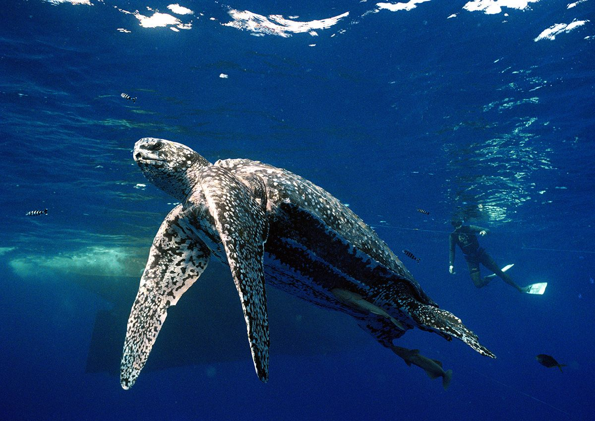

Tartaruga-de-couro
Dermochelys coriacea
A tartaruga-de-couro é a maior das tartarugas marinhas e se destaca por sua carapaça flexível e ausência de placas rígidas. É uma excelente nadadora e consegue realizar longas viagens pelo oceano em busca de alimento.

Curiosidades
Alimentação
Alimenta-se principalmente de águas-vivas, além de outros organismos gelatinosos encontrados no oceano.
Tempo de vida
Pode viver por várias décadas, embora sua expectativa exata de vida ainda não seja totalmente conhecida.
Migração
É capaz de percorrer milhares de quilômetros durante suas migrações entre áreas de alimentação e reprodução.
Nascimento
As fêmeas retornam às praias para colocar seus ovos. Depois de aproximadamente dois meses, os filhotes nascem e seguem em direção ao mar.
Importantes para o ecossistema
Ao se alimentar de águas-vivas, ajuda a controlar suas populações e contribui para o equilíbrio dos ecossistemas marinhos.
Habitat
É encontrada em oceanos tropicais e temperados de todo o mundo, podendo chegar a regiões de águas muito frias.


Você Sabia?
A tartaruga-de-couro é capaz de mergulhar a grandes profundidades e suportar águas muito mais frias do que a maioria das outras tartarugas marinhas.
